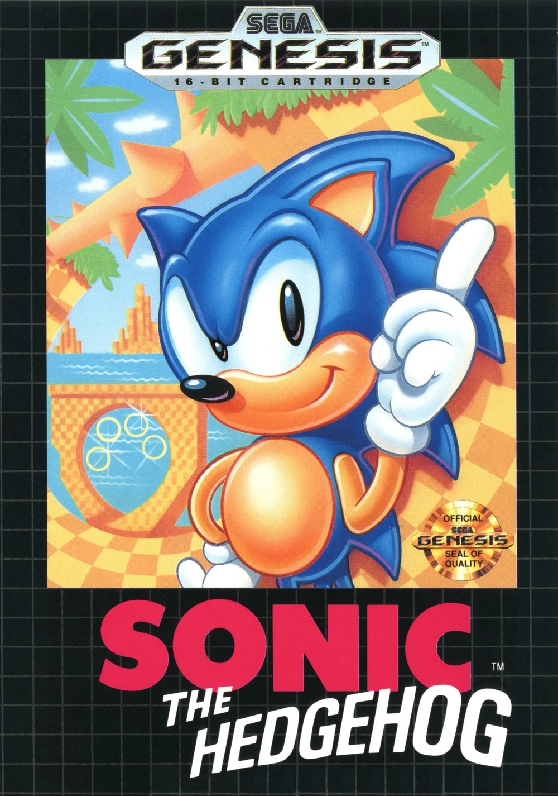
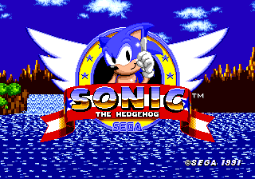

Sonic the Hedgehog (ソニック・ザ・ヘッジホッグ Sonikku za Hejjihoggu?), retroactively called Sonic 1, is a 2D platformer video game developed by Sonic Team and published by Sega for their Genesis and Mega Drive home video game systems. It is the launch title of the Sonic the Hedgehog series and marks the official debut of Sega's current mascot, Sonic the Hedgehog, who can run at supersonic speeds. Players control Sonic during his quest to defeat Doctor Eggman, who is on the hunt for powerful relics known as the Chaos Emeralds on South Island. The gameplay involves using a Spin Attack to defeat enemies and collecting Rings for health. The game began development in April 1990, following an internal contest at Sega of Japan to create a new mascot for the company. A team of seven developed the game, including lead programmer Yuji Naka, character designer Naoto Ohshima, and lead designer Hirokazu Yasuhara. What would evolve into Sonic was originally a rabbit, but was later replaced by a hedgehog to allow a faster and simpler gameplay. Despite strong enthusiasm within Sega of Japan, the project was ill-received by the company's American division; disagreements and miscommunications resulted in the game and the franchise it would spawn receiving separate regional versions until the late 1990s. The soundtrack was made by Masato Nakamura, from the J-pop band Dreams Come True. Sonic the Hedgehog was revealed at the Consumer Electronics Show in January 1991. It was released in June of that year in the United Kingdom and North America, and in July in the rest of the world, following an aggressive marketing campaign that pitted Sonic against Mario, Nintendo's mascot. In the United States, the game was bundled with the Genesis (the regional name for the Mega Drive) upon release, which sold 15 million units as a result. Sonic the Hedgehog was widely praised by critics and allowed Sega to directly compete with Nintendo, sparking a heated rivalry throughout the 1990s often referred to as the "console wars". It has since been ported numerous times to many other consoles and compilations, with most versions featuring additional content and enhancements.

The story is set on South Island, known for housing the Chaos Emeralds, six powerful gemstones that can bring energy to living beings and power weapons of mass destruction. No one knows how to obtain these gems, as South Island is a moving island, with the Emeralds existing within its natural distortions. Doctor Eggman learns of the Chaos Emeralds' existence and raids South Island to obtain them, capturing the local Animals to power his "Badnik" robots and building the Scrap Brain as his base of operations. His nemesis, Sonic the Hedgehog, rushes to stop him. Sonic travels through the various Zones, freeing the Animals and defeating Eggman on numerous occasions while hunting for the Chaos Emeralds. Sonic eventually infiltrates the Scrap Brain. After a few setbacks, he engages in a final fight against Eggman in a room armed with the Egg Crusher. After defeating the doctor, Sonic returns to Green Hill, where he celebrates his victory with the Animals. A post-credits sequence will play depending on the player's actions: not collecting the six Chaos Emeralds results in Eggman securing them for himself, and the post-credits scene depicts him juggling the uncollected Emeralds. If the player has collected all Emeralds, they instead fill Green Hill with flowers before disappearing, and Eggman is shown angrily jumping on the text "END".

Sonic the Hedgehog has seven Zones. The first six Zones contain three Acts, with the third Act ending with a boss battle against Doctor Eggman. All bosses in this game take eight hits to defeat. 1. Green Hill Zone: A natural landscape with checkered soil, oversized flowers, totems, and palm trees. The boss of Green Hill Act 3 is the Egg Wrecker, consisting of Eggman's Egg Mobile swinging a wrecking ball around. 2. Marble Zone: An ancient ruin in a mountain range, with various pools of lava. Most of Marble Zone is spent in an underground dungeon with traps. At the end of Act 3, the player fights the Egg Scorcher, which is the Egg Mobile with a fireball cannon on its underside. 3. Spring Yard Zone: A city in a forest and some mountains during the sunset. The player bounces around in Bumpers and navigates using moving blocks. Spring Yard's boss is the Egg Stinger, the Egg Mobile with a spike that it uses to slowly dismantle the bridge that the battle takes place on. 4. Labyrinth Zone: The insides of an ancient ruin. This stage is infamous for being mostly set underwater, where Sonic moves much more slowly and drowns unless he uses the air bubbles that emerge from cracks on the floor to breathe. At the end of Labyrinth Act 3, the player pursues Eggman in a trap-ridden ascent while water continually rises. 5. Star Light Zone: A construction site in the middle of the city at the night. Star Light features seesaws, which contain an iron ball that can be used to give Sonic an upward boost. This gimmick appears in the Zone's boss, the Egg Spiker, which drops explosive versions of such balls onto the arena's seesaws. 6. Scrap Brain Zone: A heavily mechanized and polluted area and Eggman's base of operations. Act 1 is set outdoors, while Act 2 takes place inside one of Scrap Brain's facilities. Sonic is then lured into a trap and falls into an area similar to Labyrinth Zone, which is where Act 3 takes place. There is no boss here. 7. Final Zone: It is set immediately after Scrap Brain Act 3 and in the same facility as Act 2. The stage is a boss fight against the Egg Crusher, a room with four hydraulic presses-with Eggman inside any of those-and seeking plasma balls. Sonic is given no Rings during this battle, and must attack the press with Eggman inside to defeat him.